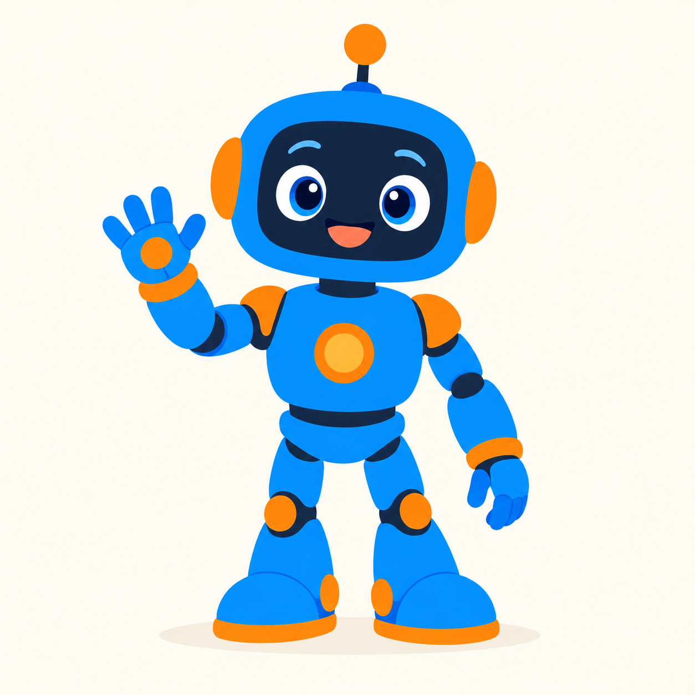

1. Você pede
Descreva a tarefa no Claude Code ou no Codex, do jeito que preferir.
Cada parte da tarefa vai para o modelo que faz melhor: o código com um, a arte com outro, tudo verificado antes de chegar até você.

Descreva a tarefa no Claude Code ou no Codex, do jeito que preferir.
Cada parte vai para o melhor modelo disponível, escolhido pela evidência.
Escopo, testes e imagens são verificados antes de o resultado ser aceito.